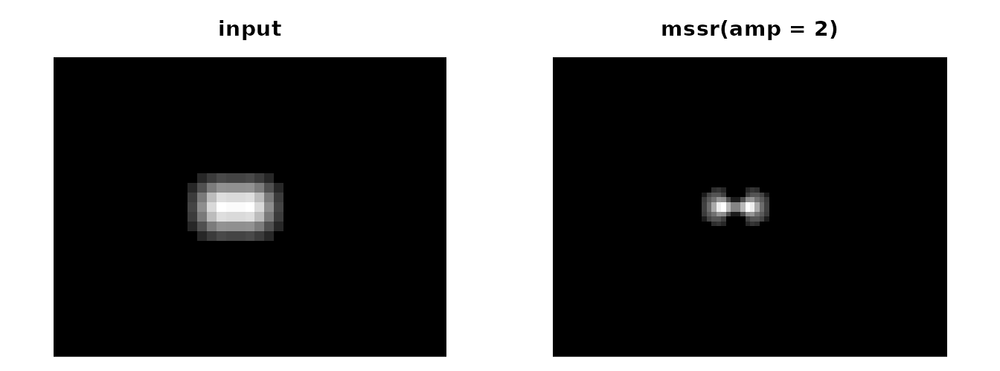
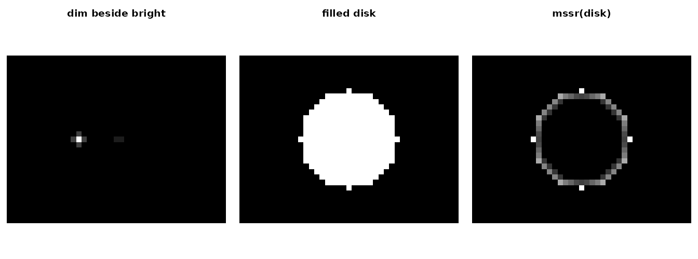

All images here are synthetic and generated in this document, so the true scene is known.
The operator
Mean-Shift Super-Resolution (MSSR; Torres-García et al. 2022, doi:10.1038/s41467-022-34693-9) subtracts a local,
range-weighted mean-shift estimate from each pixel and refines the
result over order steps. fwhm is the
point-spread-function width in input pixels and has no
default.
g <- expand.grid(r = 1:31, c = 1:41)
spot <- function(r0, c0, a = 1) a * exp(-((g$r - r0)^2 + (g$c - c0)^2) / (2 * (3 / 2.3548)^2))
pair <- function(sep) matrix(spot(16, 18) + spot(16, 18 + sep) + 0.05, 31, 41)
x <- pair(3) # two sources 3 px apart, FWHM 3 px
res <- mssr(x, fwhm = 3, amp = 2)
res
#> <mssr_result> intensity_weighted_structure
#> input 31 x 41 -> output 62 x 82 (amp 2, extent grid)
#> fwhm 3 px, order 1, kernel disk (half-size 3), mesh TRUE
#> engine mssr_r_rev2; zero fraction 0.488
#> Not a quantitative intensity: measure on the original data.
op <- par(mfrow = c(1, 2), mar = c(0.5, 0.5, 2, 0.5))
show(x, "input"); show(as.matrix(res), "mssr(amp = 2)")
par(op)The amplified grid only adds samples. mssr_coords()
places them in input-pixel units, and the field of view stays
[0.5, n + 0.5]:
range(mssr_coords(res)$col)
#> [1] 0.75 41.25
res$transform$spacing
#> row col
#> 0.5 0.5How far does the separation go? Compare the value at the midpoint between the two sources with the value at a source center, in the input and in the MSSR map (values below 1 mean a dip between the sources):
mid_ratio <- function(sep) {
x <- pair(sep)
r <- mssr(x, fwhm = 3, amp = 2)
v <- as.matrix(r)
co <- mssr_coords(r)
row <- which.min(abs(co$row - 16))
at_input <- function(cc) stats::approx(1:41, x[16, ], cc)$y
at_mssr <- function(cc) stats::approx(co$col, v[row, ], cc)$y
c(input = at_input(18 + sep / 2) / at_input(18), mssr = at_mssr(18 + sep / 2) / at_mssr(18))
}
round(rbind(`2.4 px` = mid_ratio(2.4), `3 px` = mid_ratio(3)), 3)
#> input mssr
#> 2.4 px 1.086 1.235
#> 3 px 0.968 0.255At 3 px the input shows only a shallow dip, which MSSR deepens strongly. At 2.4 px the blurred sources form a single hump, and MSSR returns a single, sharper hump: it enhances existing structure but does not split sources that the blur has already merged.
Known failure modes
MSSR is nonlinear. A dim structure next to a bright one is strongly suppressed, and broad filled objects can be hollowed or fragmented:
y <- matrix(spot(16, 14) + spot(16, 21.5, 0.1) + 0.02, 31, 41) # 10:1 brightness
disk <- outer(1:31, 1:41, function(r, c) as.numeric((r - 16)^2 + (c - 21)^2 <= 81))
disk <- disk + 0.02
ry <- as.matrix(mssr(y, fwhm = 3))
rd <- as.matrix(mssr(disk, fwhm = 3))
c(input_ratio = y[16, 22] / y[16, 14], mssr_ratio = ry[16, 22] / ry[16, 14])
#> input_ratio mssr_ratio
#> 0.110379995 0.008616307
op <- par(mfrow = c(1, 3), mar = c(0.5, 0.5, 2, 0.5))
show(ry, "dim beside bright"); show(disk, "filled disk"); show(rd, "mssr(disk)")
par(op)The outputs are therefore not quantitative;
res$diagnostics$quantitative is always
FALSE.
Masks with measurements on the original data
A structure map can select pixels, but measurements belong to the
original image. mssr_mask() keeps an exact number of pixels
of a region. tie_fraction reports the share of the selected
pixels that random tie-breaking decided. That share can be large,
because the mean shift is clipped at zero and many pixels tie there.
m <- mssr_mask(mssr(x, fwhm = 3), fraction = 0.2)
c(coverage = attr(m, "coverage"), tie_fraction = attr(m, "tie_fraction"))
#> coverage tie_fraction
#> 0.2006294 0.8784314
c(mean_all = mean(x), mean_masked = mean(x[m]))
#> mean_all mean_masked
#> 0.06604718 0.11992835Selecting pixels this way changes the measured population. It is not known to improve any downstream analysis, so evaluate it for your own task.
Degenerate input and unsupported requests
Flat frames return zeros flagged as degenerate. Requests the package cannot honor fail with classed errors:
mssr(matrix(1, 5, 5), fwhm = 3)$diagnostics[c("degenerate", "degenerate_reason")]
#> $degenerate
#> [1] TRUE
#>
#> $degenerate_reason
#> [1] "flat input"
try(mssr(array(0, c(4, 4, 3)), fwhm = 3)) # no axis is guessed
#> Error in mssr(array(0, c(4, 4, 3)), fwhm = 3) :
#> `x` has 3 dimensions; process one 2D frame at a time (no axis is
#> inferred).
try(mssr(matrix(c(1, NA, 3, 4), 2), fwhm = 3)) # non-finite input
#> Error in mssr(matrix(c(1, NA, 3, 4), 2), fwhm = 3) :
#> `x` contains NA, NaN or infinite values; MSSR is undefined for them.Checking an installation
mssr_selftest() recomputes the bundled synthetic
fixtures. They were produced by the accepted engine definition, so this
is a regression check of the installation, not an independent
validation:
st <- mssr_selftest()
st[, c("fixture_id", "max_abs_error", "passed")]
#> fixture_id max_abs_error passed
#> 1 fx01_amp1_o1 0.000000e+00 TRUE
#> 2 fx02_amp1_o1_nonorm 0.000000e+00 TRUE
#> 3 fx02_amp1_o1_norm 0.000000e+00 TRUE
#> 4 fx03_constant_o2 0.000000e+00 TRUE
#> 5 fx04_zero_o1 0.000000e+00 TRUE
#> 6 fx05_amp1_o0 0.000000e+00 TRUE
#> 7 fx05_amp1_o1 0.000000e+00 TRUE
#> 8 fx06_amp2_extent_o1 9.436896e-15 TRUE
#> 9 fx06_amp2_endpoint_o1 6.883383e-15 TRUE
#> 10 fx07_amp1_o3_nonorm 0.000000e+00 TRUE